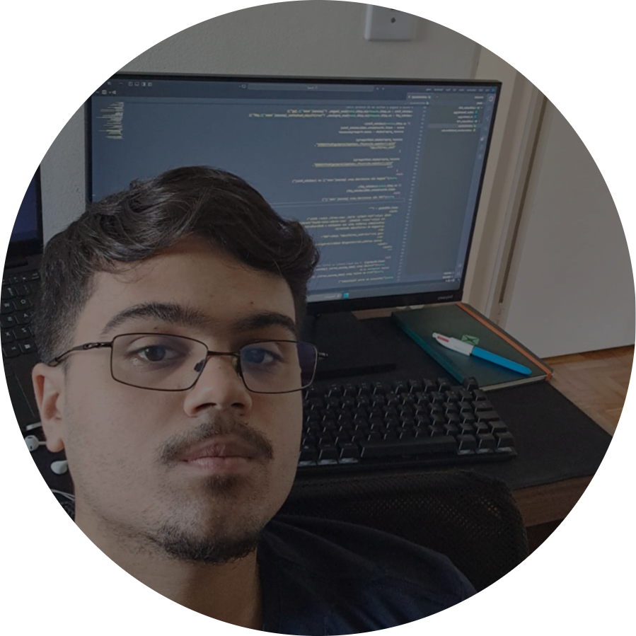
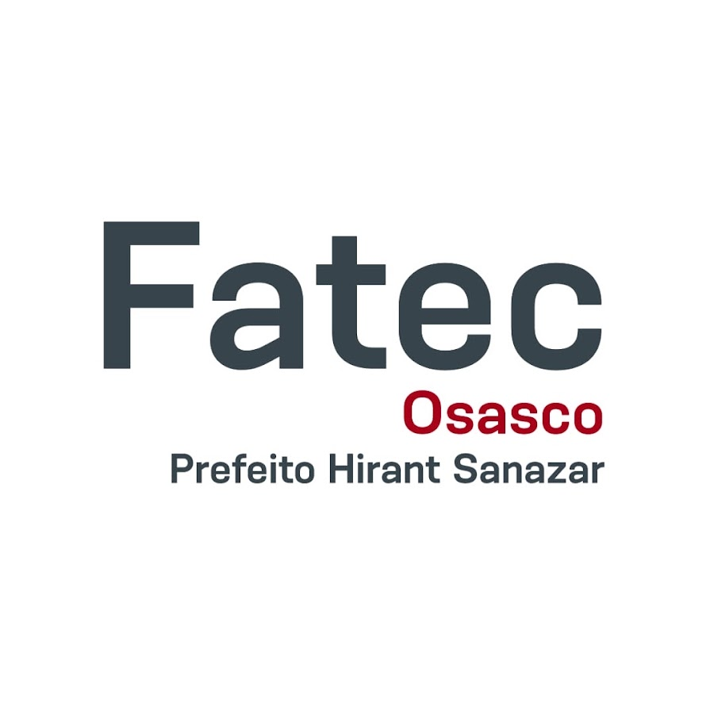

MUITO PRAZER, ARTHUR RESENDE GOMES.
Olá! Meu nome é Arthur Resende Gomes, sou estudante de Desenvolvimento de Software Multiplataforma na FATEC Osasco, atualmente cursando o 4º semestre. Tenho grande interesse pelo desenvolvimento de software, principalmente na área de back-end, e busco ampliar meus conhecimentos por meio de estudos e projetos práticos.
Possuo conhecimentos em Python para desenvolvimento de APIs REST, automações e análise de dados, além de Java com Spring Boot, aplicando conceitos de MVC e Design Patterns. Também tenho conhecimentos em React e Angular para desenvolvimento de interfaces, bancos de dados relacionais e NoSQL, Git e metodologias ágeis.
Sou uma pessoa organizada, proativa e aberta a novos aprendizados. Tenho facilidade para trabalhar em equipe e me adaptar a diferentes desafios. Gosto de compreender os problemas antes de buscar soluções e estou sempre em busca de oportunidades para desenvolver minhas habilidades e contribuir com projetos na área de tecnologia.
MINHAS ESPECIALIDADES.
FRONT-END
Tenho conhecimento em HTML, CSS, JavaScript, TypeScript e React, desenvolvendo interfaces responsivas e integradas a APIs REST. Utilizo principalmente React em projetos profissionais e pessoais, trabalhando na criação de componentes reutilizáveis, organização de interfaces e integração com o back-end, buscando proporcionar uma boa experiência ao usuário e facilitar a manutenção das aplicações.
BANCO DE DADOS
Tenho conhecimentos em bancos de dados relacionais e NoSQL, utilizando MySQL, SQL Server, SQLite, DBeaver, MongoDB e Firestore. Também utilizo ferramentas como DBeaver para gerenciamento e consulta de dados. Já desenvolvi projetos acadêmicos, pessoais e profissionais envolvendo modelagem de dados, criação de relacionamentos, consultas SQL e integração de bancos de dados com aplicações e APIs.
BACK-END
O back-end é a área que tenho maior interesse e afinidade. Desenvolvo APIs REST utilizando Python com FastAPI e também trabalho com Java e Spring Boot, aplicando conceitos de MVC, SOLID e Design Patterns. Além disso, desenvolvo automações e soluções para processamento de dados utilizando Pandas, Selenium, PyAutoGUI e Streamlit. Também utilizo Git para versionamento e organização dos projetos, buscando aplicar boas práticas de desenvolvimento.
EXPERIÊNCIA PROFISSIONAL/ACADÊMICA.
Atualmente atuo como Desenvolvedor Júnior na área de Gestão de Abastecimento, trabalhando no desenvolvimento de aplicações com Java 17 e Spring Boot no back-end e Angular no front-end. Minha atuação envolve a criação e evolução de funcionalidades, desde o desenvolvimento de interfaces até a implementação de soluções e processos automatizados.
Anteriormente, atuei como Jovem Aprendiz na área de Data Analytics, desenvolvendo automações e aplicações para otimizar processos internos. Entre os projetos, desenvolvi uma automação utilizando Python, Pandas, Selenium, PyAutoGUI e Streamlit, que reduziu o tempo de abertura de chamados de aproximadamente 2 horas para 30 minutos. Também participei do desenvolvimento de uma plataforma interna utilizando React, TypeScript, FastAPI, Firestore e Google Cloud Platform (GCP).
Além da experiência profissional, desenvolvo projetos pessoais e acadêmicos para aplicar conhecimentos e criar soluções para problemas reais. Entre eles estão o GymControl, um sistema de gerenciamento de academias que centraliza o controle de alunos, mensalidades, equipamentos e indicadores, facilitando a administração e reduzindo processos manuais, e o Hands, um marketplace que conecta clientes a prestadores de serviços por localização e área de atuação, oferecendo avaliações e ferramentas de gestão para aumentar a confiança e facilitar a contratação de profissionais. Ambos foram desenvolvidos com React e FastAPI, utilizando PostgreSQL (GymControl) e MongoDB (Hands), além de autenticação, controle de acesso, recursos de segurança e metodologias ágeis com Scrum.
